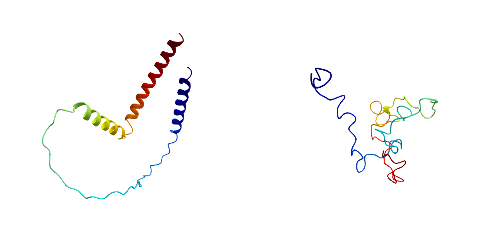

DihedralParametrization
DihedralParametrization represents protein structures using their rotatable-bond dihedral angles: the backbone angles φ and ψ, and the side-chain χ angles. A bondparametrization call separates a protein chain into fixed geometry (bond lengths, bond angles, and non-rotatable dihedrals such as ω) and a vector of rotatable dihedral angles. atomcoordinates reconstructs the atom coordinates, and dihedralangles measures the dihedral vector back out of a set of coordinates; atomcoordinates! and dihedralangles! write into preallocated output. This representation preserves bond lengths and angles while using fewer parameters than Cartesian coordinates.
The Derivatives page documents the Jacobian and related matrix-vector products for optimization and sampling in dihedral coordinates.
If you only need the backbone degrees of freedom, and not fixed local geometry or the derivative layer, see Backboner instead.
Installation
pkg> add https://github.com/HolyLab/DihedralParametrization.jlPrerequisites
Input must be a complete structure loaded from a CIF or PDB file by BioStructures. It must satisfy these constraints:
- Hydrogens use the Amber naming convention. ChimeraX can add them.
- Histidine is disambiguated as HID/HIE/HIP, and the amino- and carboxyl-terminal residues have "N" and "C" prepended to their residue names, respectively. BioStructures's
specializeresnames!(chain)assigns these names once hydrogens have been added. - The carboxyl-terminal residue carries its
OXTatom. - The chain has no breaks.
- Only polymer residues are included. To exclude waters, ions, and ligands, pass
collectresidues(chain, standardselector).buildchainpreserves excluded residues. - Atoms and residues with alternatives contribute their defaults.
bondparametrization throws an ArgumentError, naming the residue at fault, for input that does not meet these constraints or that the build tables cannot otherwise describe.
Demo
This example uses an AlphaFold structure from test/data with hydrogens.
julia> using DihedralParametrization, BioStructures
julia> path = joinpath(pkgdir(DihedralParametrization), "test", "data", "AF-M3YHX5-F1-model_v4_hydrogens.cif");
julia> struc = read(path, MMCIFFormat)
MolecularStructure AF-M3YHX5-F1-model_v4_hydrogens.cif with 1 models, 1 chains (A), 112 residues, 1833 atoms
julia> specializeresnames!(struc)
MolecularStructure AF-M3YHX5-F1-model_v4_hydrogens.cif with 1 models, 1 chains (A), 112 residues, 1833 atoms
julia> A = struc["A"]
Chain A with 112 residues, 0 other molecules, 1833 atoms
julia> A[1] # check that we've renamed the amino-terminal residue
Residue 1:A with name NMET, 19 atoms
julia> bp, dihedrals = bondparametrization(A);
julia> bp
BondParametrization with 1833 atoms and 112 residues
julia> summary(dihedrals)
"538-element Vector{Float64}"bp stores bond lengths, bond angles, and fixed dihedral angles. dihedrals stores the rotatable dihedral angles, in radians.
Pass a different vector with entries from -π to π to generate another configuration:
julia> randdh = 2π * (rand(length(dihedrals)) .- 0.5);
julia> X = atomcoordinates(bp, randdh, A);
julia> summary(X)
"1833-element Vector{StaticArraysCore.SVector{3, Float64}}"
julia> B = buildchain(A, bp, X)
Chain A with 112 residues, 0 other molecules, 1833 atomsPlot the original and generated structures:
using GLMakie, ProtPlot
fig = Figure(size=(1000, 500))
ax1 = LScene(fig[1, 1]; show_axis=false)
ax2 = LScene(fig[1, 2]; show_axis=false)
ribbon!(ax1, A)
ribbon!(ax2, B)
The left panel is the original structure; the right panel has every rotatable dihedral set to an independent random value, so only bond lengths and bond angles are preserved.